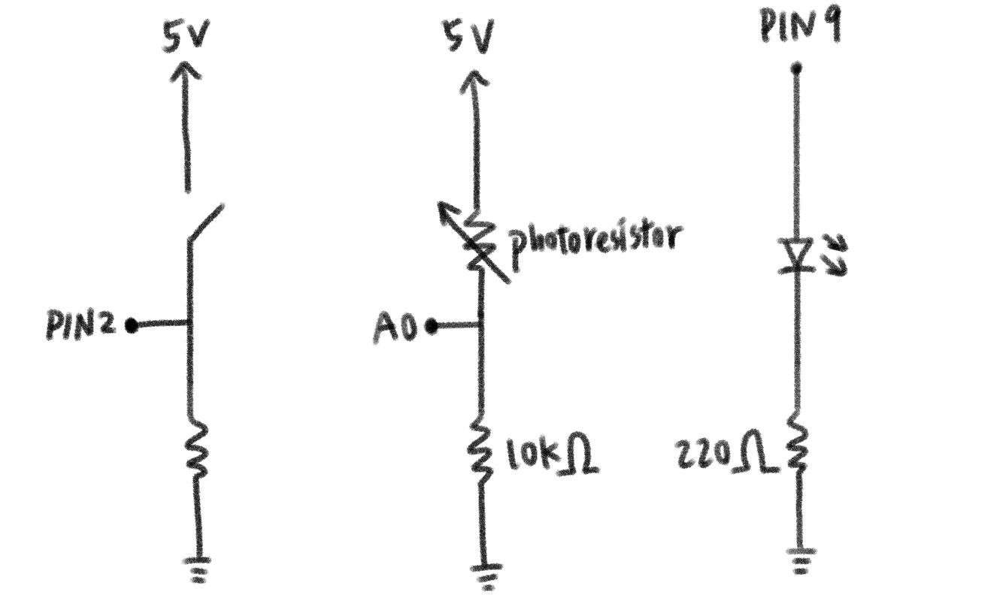

For this assignment, I built a browser-based interface that connects to an Arduino using WebSerial. The webpage reads live sensor data (photoresistor) and controls hardware outputs (LED + pushbutton interaction) through serial communication. The interface updates in real time so the user can see values change and interact with the circuit directly from the browser.

Photoresistor is wired as a voltage divider into an Arduino analog pin A0. LED is connected to a digital pin through a resistor. Pushbutton is wired to a digital input pin. The Arduino sends readings of light value + button state over Serial to the webpage. The webpage can send commands back to turn the LED on/off.

The photoresistor and push button use fixed resistors to form a voltage divider, which I use 10KΩ in this case. I used a 220Ω resistor to limit current through the LED. (5V - 2V) / 220Ω = 0.0136A = 13.6mA, which is within safe range.
Connections: The photoresistor is wired as a voltage divider with a 10KΩ resistor. One side of the photoresistor goes to 5V, the other side goes to A0. The pushbutton is connected to D2 and GND. The LED is connected to D9 (output) through a 220Ω resistor, then to GND.
// A6 Arduino: WebSerial
const int photoPin = A0;
const int buttonPin = 2;
const int ledPin = 9;
int ledValue = 0; // LED brightness or on/off state
void setup() {
Serial.begin(9600);
pinMode(photoPin, INPUT);
pinMode(ledPin, OUTPUT);
analogWrite(ledPin, 0);
}
void loop() {
int lightVal = analogRead(photoPin);
int buttonVal = digitalRead(buttonPin);
int pressed = (buttonVal == LOW) ? 1 : 0;
// send data to browser as CSV: light,pressed,ledValue
Serial.print(lightVal);
Serial.print(",");
Serial.print(pressed);
Serial.print(",");
Serial.println(ledValue);
// read commands from browser (example formats):
// "LED:0" or "LED:255"
if (Serial.available() > 0) {
String msg = Serial.readStringUntil('\n');
msg.trim();
if (msg.startsWith("LED:")) {
String valStr = msg.substring(4);
int v = valStr.toInt();
v = constrain(v, 0, 255);
ledValue = v;
analogWrite(ledPin, ledValue);
}
}
delay(30);
}
<button id="connectBtn">Connect to Arduino</button>
<div>
<p>Light: <span id="lightVal">—</span></p>
<p>Button: <span id="buttonVal">—</span></p>
<p>LED: <span id="ledVal">—</span></p>
</div>
<label>
LED Brightness:
<input id="ledSlider" type="range" min="0" max="255" value="0" />
</label>
<script>
let port, reader, writer;
const connectBtn = document.getElementById("connectBtn");
const lightSpan = document.getElementById("lightVal");
const buttonSpan = document.getElementById("buttonVal");
const ledSpan = document.getElementById("ledVal");
const ledSlider = document.getElementById("ledSlider");
connectBtn.addEventListener("click", async () => {
port = await navigator.serial.requestPort();
await port.open({ baudRate: 9600 });
const textDecoder = new TextDecoderStream();
port.readable.pipeTo(textDecoder.writable);
reader = textDecoder.readable.getReader();
const textEncoder = new TextEncoderStream();
textEncoder.readable.pipeTo(port.writable);
writer = textEncoder.writable.getWriter();
readLoop();
});
async function readLoop() {
let buffer = "";
while (true) {
const { value, done } = await reader.read();
if (done) break;
buffer += value;
// parse by line
const lines = buffer.split("\n");
buffer = lines.pop();
for (const line of lines) {
const parts = line.trim().split(",");
if (parts.length >= 3) {
const light = parts[0];
const pressed = parts[1] === "1" ? "Pressed" : "Not pressed";
const led = parts[2];
lightSpan.textContent = light;
buttonSpan.textContent = pressed;
ledSpan.textContent = led;
}
}
}
}
ledSlider.addEventListener("input", async () => {
if (!writer) return;
const v = ledSlider.value;
await writer.write(`LED:${v}\n`);
});
</script>

This GIF shows the LED responds to commands from the webpage and it also returns the button state of whether it is currently being pressed or not.

The webpage updating its brightness based on the photoresistor value. Moving between bright and dark environments changes the sensor value.
The main challenge was making sure the serial format stayed consistent and that the webpage parsed incoming data reliably. Debouncing the pushbutton and handling connection state in the browser also helped make the interaction feel stable.
Yes. I used a language model to help troubleshoot WebSerial connection setup and to validate a clean message format for sending/receiving serial data. I tested and adjusted the final behavior using the browser console and Arduino Serial Monitor.